Intro to ggplot2
Learning Objectives
- Basics of ggplot2: aes vs geom
- Making scatterplots
- Layers and groups
- Various one-dimensional summaries
- Faceting
- Saving plots to a file
- Customizing axis limits and color choices
- Applying themes
Preparations
There are several different systems for creating data visualizations in R. We will introduce ggplot2, which is based on Leland Wilkinson's Grammar of Graphics. The learning curve is a bit steep, but ultimately you'll be able to produce complex graphs more quickly and easily.
You first need to install the ggplot2 package:
install.packages("ggplot2")You then need to load the package:
library(ggplot2)We'll consider the gapminder data from the last lesson. If it's not within your R workspace, load it again with read.csv.
gapminder <- read.csv("~/Desktop/gapminder.csv")A first plot
An initial bit of code, to make a scatterplot:
ggplot(gapminder, aes(x=gdpPercap, y=lifeExp)) + geom_point()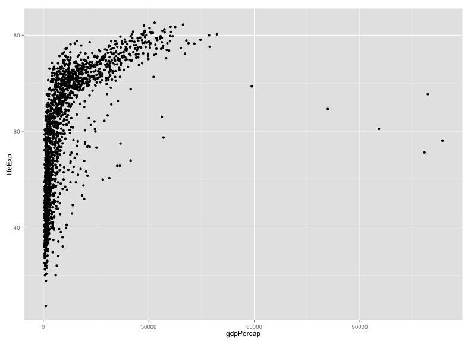
Two key concepts in the grammar of graphics: aesthetics map features of the data (for example, the lifeExp variable) to features of the visualization (for example, the y-axis coordinate), and geoms concern what actually gets plotted (here, each data point becomes a point in the plot).
Another key aspect of ggplot2: the ggplot() function creates a graphics object; additional controls are added with the + operator. The actual plot is made when the object is printed.
The following is equivalent to the code above. The actual plot isn't created until the p2 object is printed. (When you type an object's name at the R prompt, it gets printed, and that's the usual way that these plots get created.)
p1 <- ggplot(gapminder, aes(x=gdpPercap, y=lifeExp))
p2 <- p1 + geom_point()
print(p2)It's best to do the x-axis on a log scale.
ggplot(gapminder, aes(x=gdpPercap, y=lifeExp)) + geom_point() + scale_x_log10()
We could also have used the following:
p2 + scale_x_log10()Scales control the aesthetics (the mapping between a column in the data and a feature on the plot). More on this later.
Challenge
Make a scatterplot of lifeExp vs gdpPercap with only for the data for China.
library(dplyr)
gm_china <- filter(gapminder, country=="China")
ggplot(gm_china, aes(x=gdpPercap, y=lifeExp)) + geom_point() + scale_x_log10()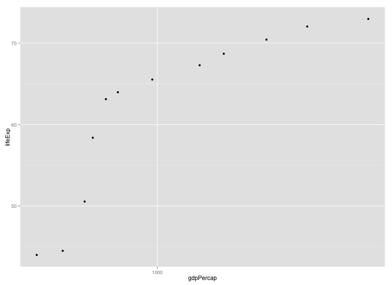
Other aesthetics
For a scatterplot, additional aesthetics include shape, size, and color.
For example, we might make our scatterplot for all countries, with data from 1952, and then color the points according to the continent.
gm_1952 <- filter(gapminder, year==1952)
ggplot(gm_1952, aes(x=gdpPercap, y=lifeExp)) +
geom_point() + scale_x_log10() +
aes(color=continent)
Note that we could have put color=continent within the call to ggplot(): the following is equivalent to the above.
ggplot(gm_1952, aes(x=gdpPercap, y=lifeExp, color=continent)) +
geom_point() + scale_x_log10()Challenge
Try out the size, shape, and color aesthetics, both with categorical variables (such as continent) and numeric variables (such as pop).
Layers
You can use geom_line to make a line plot, for example, for China:
p <- ggplot(filter(gapminder, country=="China"),
aes(x=gdpPercap, y=lifeExp))
p + geom_line()
You can use both geom_line and geom_point to make a line plot with points at the data values.
p + geom_line() + geom_point()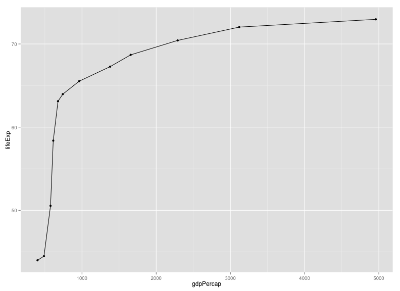
This brings up another important concept with ggplot2: layers. A given plot can have multiple layers of geometric objects, plotted one on top of the other.
If you make the lines and points different colors, we can see that points are placed on top of the lines, since they are in the second layer.
p + geom_line(color="lightblue") + geom_point(color="violetred")
If we switch the order of geom_point() and geom_line(), we'll reverse the layers.
p + geom_point(color="violetred") + geom_line(color="lightblue")
Note that aesthetics that are included in the call to ggplot2() (or completely separately) are made to be the defaults for all layers, but we can separately control the aesthetics for each layer. For example, we could color the points by year:
p + geom_line() + geom_point(aes(color=year))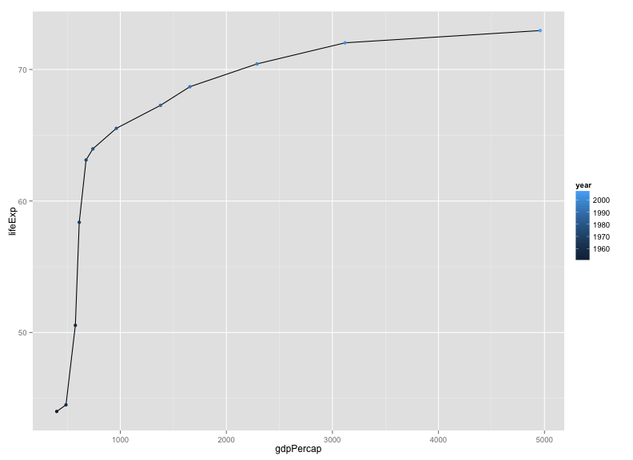
Compare that result to the following:
p + geom_line() + geom_point() + aes(color=year)
Challenge
Make a plot of lifeExp vs gdpPercap for China and India, with lines in black but points colored by country.
Groups
One's first attempt at the previous challenge may look like this:
india_china <- filter(gapminder, country=="India" | country=="China")
p <- ggplot(india_china, aes(y=lifeExp, x=gdpPercap))
p + geom_line() + geom_point(aes(color=country))
The points get connected left-to-right, which is not what we want.
If we were to make the color=country aesthetic global, we wouldn't have this problem.
p + aes(color=country) + geom_line() + geom_point()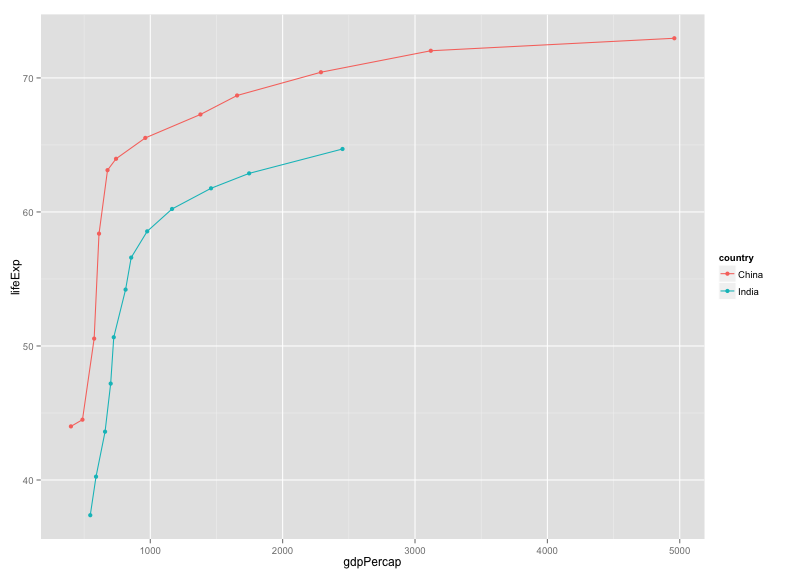
Alternatively, we can use the group aesthetic, which indicates that certain data points go together. This way the lines can be a constant color.
p + geom_line(aes(group=country)) + geom_point(aes(color=country))
We could also make the group aesthetic global.
p + aes(group=country) + geom_line() + geom_point(aes(color=country))Univariate geoms
We've focused so far on scatterplots, but one can also create one-dimensional summaries, such as histograms or boxplots.
For a histogram, you want only the x aesthetic, and then use geom_histogram(), with binwidth to define the width of the bins. Here's a histogram of lifeExp for 2007.
gm_2007 <- filter(gapminder, year==2007)
ggplot(gm_2007, aes(x=lifeExp)) + geom_histogram(binwidth=2)
If you want to compare the distributions for the different continents, you might look at density estimates rather than histograms. alpha indicates the opacity (alpha=1 is completely opaque).
ggplot(gm_2007, aes(x=lifeExp)) + geom_density(alpha=0.5) + aes(fill=continent)
Alternatively, we can look at boxplots, for which you need to define a continuous variable for y and a categorical variable for x.
ggplot(gm_2007, aes(y=lifeExp, x=continent)) + geom_boxplot()
Tip
What if we wanted these to be horizontal rather than vertical?
If you google "ggplot2 rotate boxplot", the first result will get you to the ggplot2 documentation for coord_flip().
Try last_plot() + coord_flip().
I actually prefer a scatterplot for these data:
ggplot(gm_2007, aes(y=lifeExp, x=continent)) + geom_point()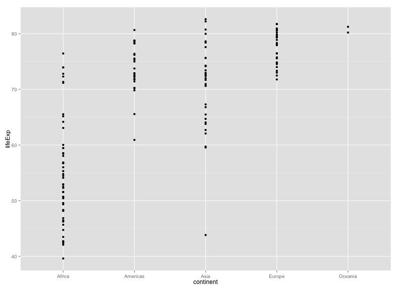
I think it's better to include a bit of horizontal jittering.
ggplot(gm_2007, aes(y=lifeExp, x=continent)) +
geom_point(position=position_jitter(width=0.1, height=0))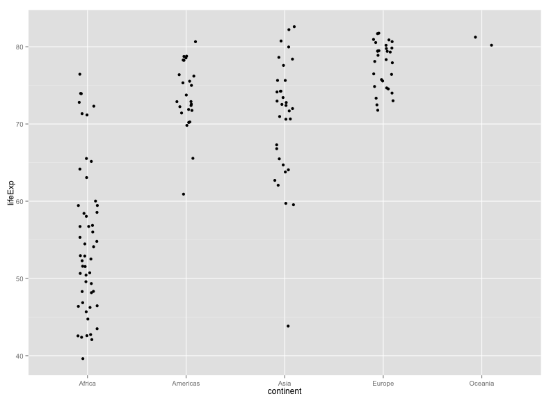
Challenge
Explore the distribution of the population sizes of countries, by continent.
Faceting
A particularly valuable feature of ggplot2 is faceting: the ability to make a series of plots, conditional on the values of some selected variables.
For example, rather than coloring points by continent, one might separate the continents into separate panels. There are two functions for this, facet_grid() and facet_wrap().
Here's the data for 2007, separated by continent.
p <- ggplot(filter(gapminder, year==2007), aes(x=gdpPercap, y=lifeExp)) + geom_point() + scale_x_log10()
p + facet_grid(~ continent)
Or we could split vertically. Note the need for the dot.
p + facet_grid(continent ~ .)
Or we could "wrap"
p + facet_wrap(~ continent)
The facet_wrap function is particularly useful if you have a lot of facets, for example, plotting by year.
p <- ggplot(gapminder, aes(x=gdpPercap, y=lifeExp)) + geom_point() + scale_x_log10()
p + aes(color=continent) + facet_wrap(~ year)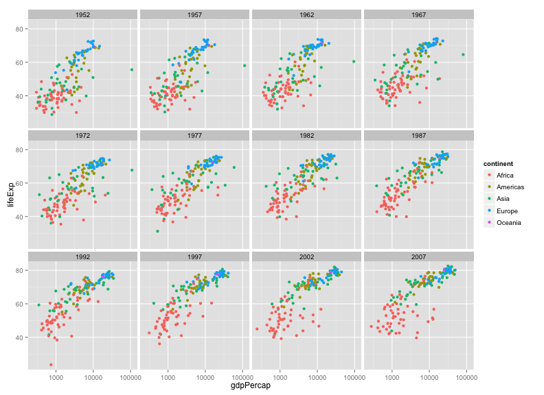
We could also facet by both year and continent.
p + facet_grid(continent ~ year)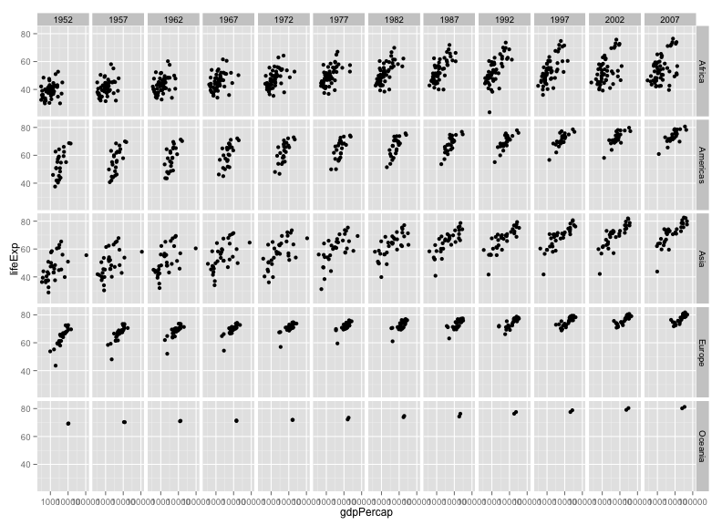
Perhaps we might drop Oceania in this.
gm_no_oceania <- filter(gapminder, continent != "Oceania")
p <- ggplot(gm_no_oceania, aes(x=gdpPercap, y=lifeExp)) + geom_point() + scale_x_log10()
p + facet_grid(continent ~ year)
Challenge
Select five countries of interest (e.g., China, India, US, France, Nigeria) and plot lifeExp vs gdpPercap across time (with geom_line), faceting by country.
Saving plots to files
If you want to save a plot, to share with others, use the ggsave function.
The default is to save the last plot that you created, but I think it's safer to first save the plot as an object and pass that to ggsave. Also give the height and width in inches.
p <- ggplot(gapminder, aes(x=gdpPercap, y=lifeExp)) + geom_point() + scale_x_log10()
ggsave("scatter.png", p, height=6, width=8)The image file type is taken from the file name extension. To make a PDF instead:
ggsave("scatter.pdf", p, height=6, width=8)Use scale to adjust the sizes of things, for example for a talk/poster versus a paper/report. Use scale < 1 to make the various elements bigger relative to the plotting area.
ggsave("scatter_2.png", p, height=6, width=8, scale=0.8)Challenge
Revisit a few of the plots you've made and try saving PNG and PDF files. Try different heights and widths. Try out the scale parameter.
Customizing a plot: axis limits
When faceting, the different panels are given common x- and y-axis limits. If we were to create separate plots (say one for each country), we would need to do a bit extra to ensure that common axis limits are used.
Recall the scale_x_log10() function that we had used to create the log scale for the x axis. This can take an argument limits (a vector of length 2) defining the minimum and maximum values plotted.
There is also a scale_y_log10() function, but if you want to change the y-axis limits without going to a log scale, you would use scale_y_continuous(). (Similarly, there's a scale_x_continuous.)
For example, to plot the data for China, using axis limits defined by the full data, we'd do the following:
gm_china <- filter(gapminder, country=="China")
xrange <- range(gapminder$gdpPercap)
yrange <- range(gapminder$lifeExp)
p <- ggplot(gm_china, aes(y=lifeExp, x=gdpPercap)) + geom_line()
p + scale_x_log10(limits=xrange) + scale_y_continuous(limits=yrange)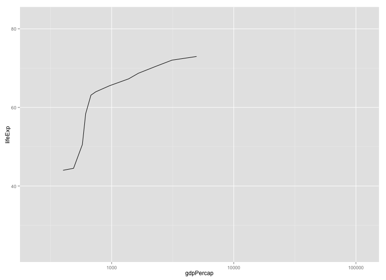
Challenge
Create a plot with lines for the United States and Sweden, but using the axis limits defined with the full data.
gm_us_sweden <- filter(gapminder, country %in% c("United States", "Sweden"))
xrange <- range(gapminder$gdpPercap)
yrange <- range(gapminder$lifeExp)
p <- ggplot(gm_us_sweden, aes(y=lifeExp, x=gdpPercap, color=country)) + geom_line()
p + scale_x_log10(limits=xrange) + scale_y_continuous(limits=yrange)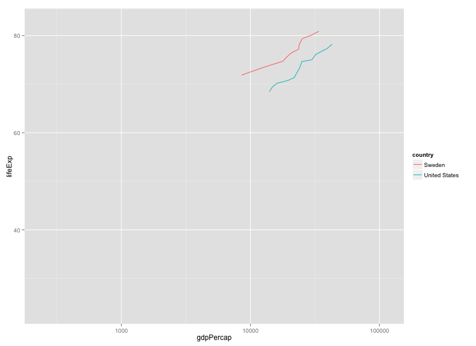
Customizing a plot: color choices
If you don't like the choices for point colors, you can customize them in a number of ways. First, you can use scale_color_manual() with a vector of your preferred choices. (If it's fill rather than color that you want to change, you'll need to use scale_fill_manual().)
gm_2007 <- filter(gapminder, year==2007)
p <- ggplot(gm_2007, aes(y=lifeExp, x=gdpPercap, color=continent)) + geom_point() + scale_x_log10()
colors <- c("black", "blue", "green", "red", "orange")
p + scale_color_manual(values=colors)
You can also use RGB hex values.
hexcolors <- c("#001F3F", "#0074D9", "#01FF70", "#FF851B", "#B10DC9")
p + scale_color_manual(values=hexcolors)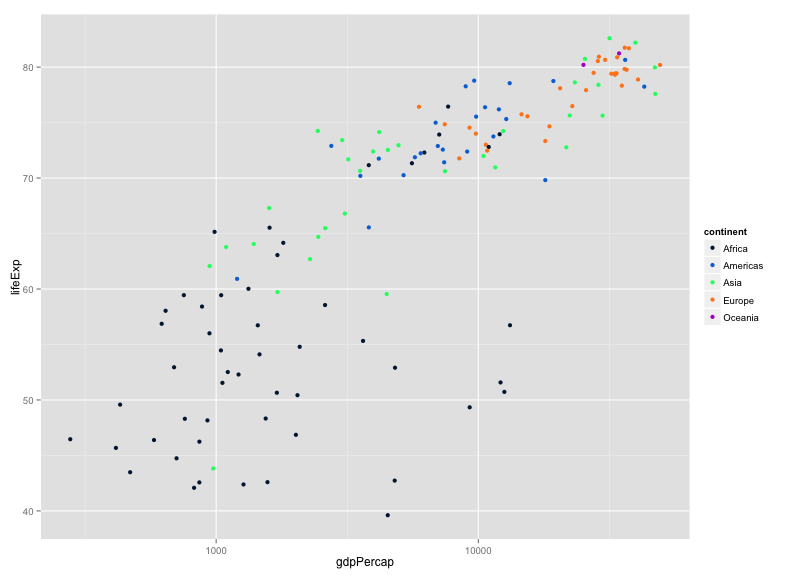
Also consider the Color Brewer palettes, available via scale_color_brewer(). If you install the RColorBrewer package, you can use display.brewer.all() to view the available palettes.
Install the package as follows:
install.packages("RColorBrewer")Then display them this way:
library(RColorBrewer)
display.brewer.all()
I like the "Dark2" palette, which you can use this way:
p + scale_color_brewer(palette="Dark2")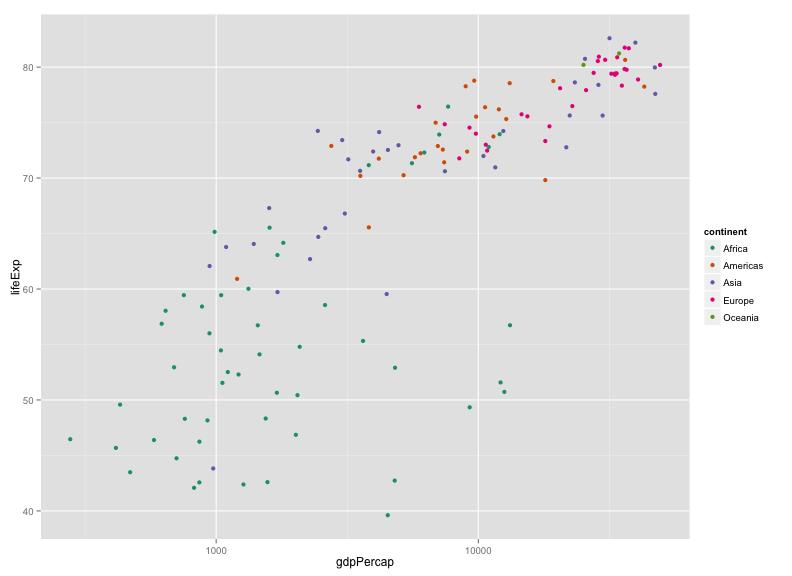
Actually, maybe "Set1" is better in this case:
p + scale_color_brewer(palette="Set1")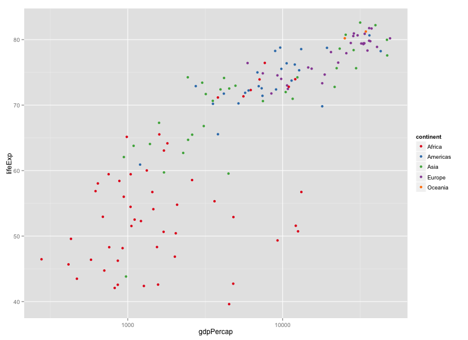
Also consider the wesanderson package, with color palettes taken from Wes Anderson movies.
Install the package as follows:
install.packages("wesanderson")Here's an example using one.
library(wesanderson)
p + scale_color_manual(values=wes_palette("Darjeeling"))
Challenge
Make a set of histograms of lifeExp for the year 2007, using facet_grid to split by continent. Use different colors for the five continents, chosen manually.
The gapminder package includes a country_colors object that colors countries by population size and continent.
install.packages(gapminder)I'm going to use that and add a bit of fanciness.
gm_2007 <- gapminder %>% filter(year==2007) %>% arrange(-pop)
ggplot(gm_2007, aes(y=lifeExp, x=gdpPercap, fill=country, size=sqrt(pop))) +
geom_point(shape=21) +
scale_x_log10() +
scale_fill_manual(values=country_colors) +
facet_wrap(~continent) +
scale_size_continuous(range=c(1, 20)) +
guides(fill=FALSE, size=FALSE)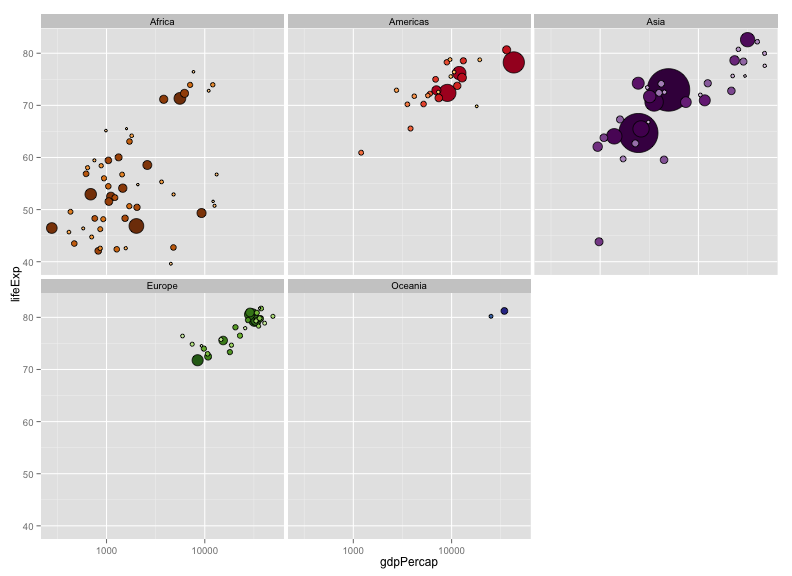
- I used
shape=21in the call togeom_point(); this makes circles, but allowing separate colors for thefill(interior) andcolor(outer circle). - I sized the points by the square-root of the population.
- I used
dplyr::arrange()to reorder the points, so that the larger points would be plotted first and the smaller ones on top. - I used
scale_size_continuouswithrange=c(1,20)to adjust the size of the points. - I used
guides()to get rid of the legends.
Themes
Themes allow you to change the overall appearance of a plot.
The default theme is theme_gray(), you might consider theme_bw() or theme_linedraw() instead.
p <- ggplot(gapminder, aes(y=lifeExp, x=gdpPercap, color=continent)) +
geom_point() + scale_x_log10() + facet_wrap(~year)
p + theme_bw()
p + theme_linedraw()
The package ggthemes() includes additional themes as well as additional color scales. Install it as follows.
install.packages("ggthemes")Consider theme_igray(), and theme_solarized_2().
library(ggthemes)
p + theme_igray()
p + theme_solarized_2()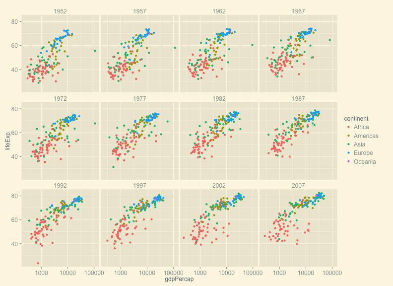
Personally, I like the default ggplot theme, but I want to remove the tick marks and add a black border. You create this as follows. (Tomorrow afternoon, we'll talk more about creating functions.)
theme_karl <-
function(...)
theme(panel.border=element_rect(fill=NA, color="black"),
strip.background=element_rect(fill="gray80", color="black"),
axis.ticks.length = grid::unit(0, "cm"), ...)Now, put it to use:
p + theme_karl()
Resources
- ggplot2 cheat sheet
- ggplot2 website
- ggplot2 book
- R graphics cookbook
- R graph catalog: ggplot2 code for graphs in the book Creating more effective graphs